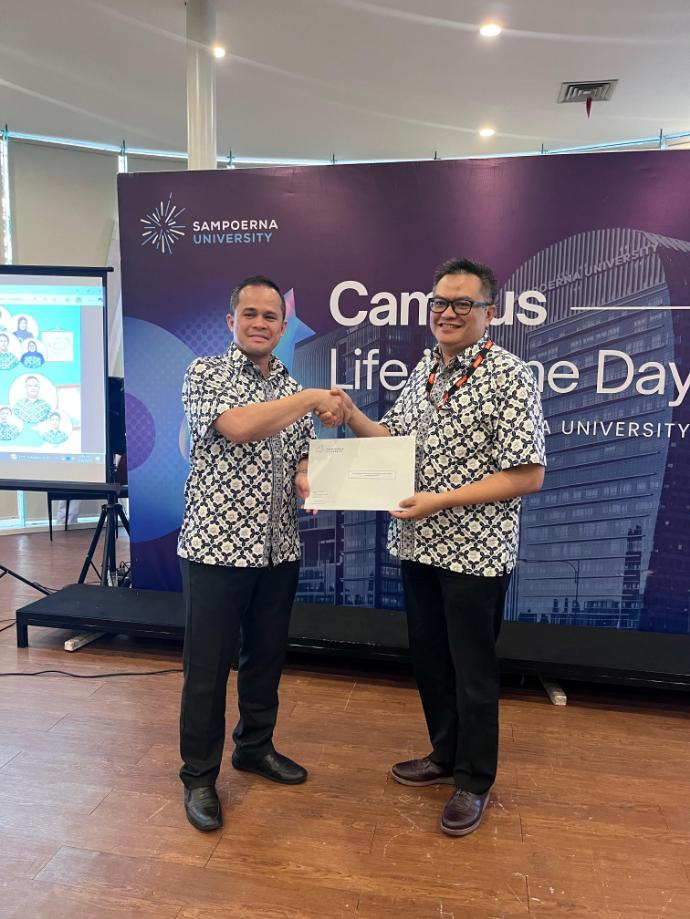
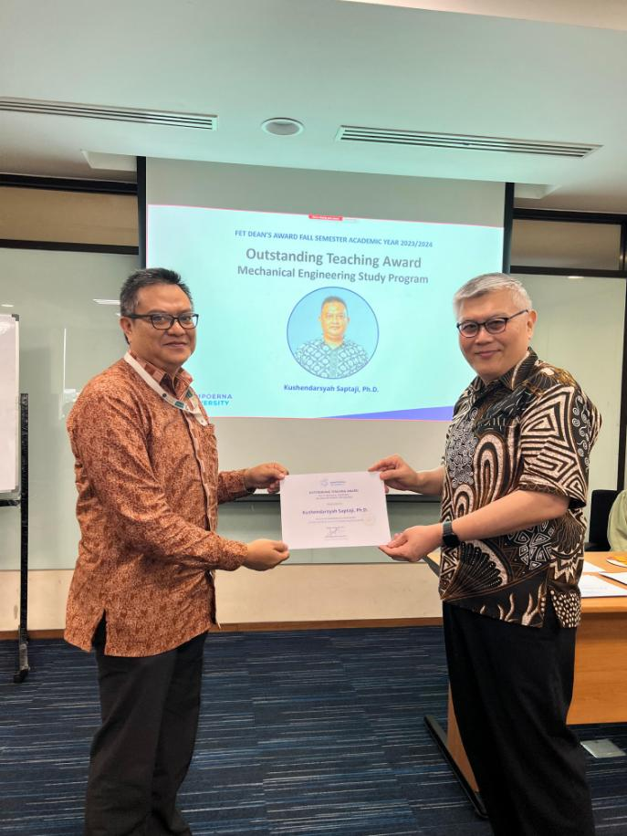
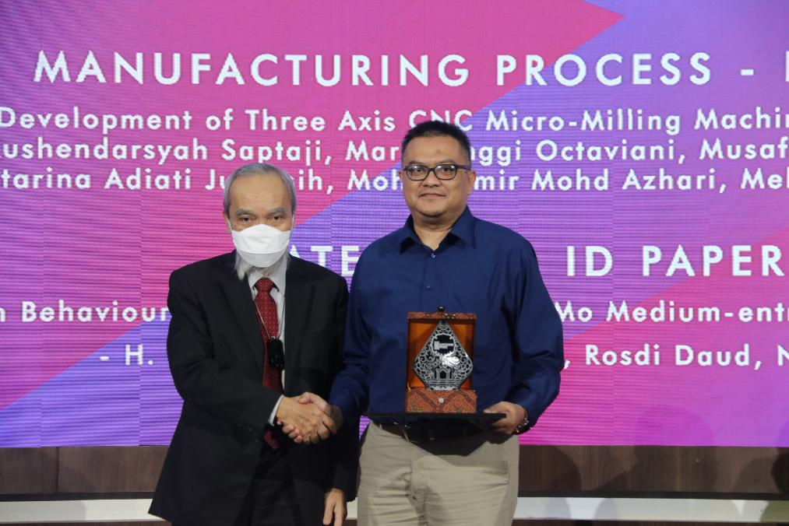

AWARDS AND SCHOLARSHIP
-
Outstanding Community Service Award, Faculty of Engineering and Technology, Sampoerna University, Academic year 2024-2025
-
Outstanding Teaching Award, Department of Mechanical Engineering, Faculty of Engineering and Technology, Sampoerna University, Academic year 2023-2024
-
Best Paper Award for paper entitled: “Development of Three Axis CNC Micro-Milling Machine: Structural Analysis”, at the Asia Pacific Conference on Manufacturing Systems and The International Manufacturing Engineering Conference 2022.
- Highly Commended Award for paper entitled: “Study on End Brush and Sintered Diamond Ball Deburring of Micro-features Milled”, at International Conference on Recent Advances in Industrial Engineering and Manufacturing (ICRAIEM) 2018.
- Bronze medal for innovation of “Micro dimple pattern using ball end mill” at Creation, Innovation, Technology and Research Exposition (CITREx), 07 - 08 February 2018.
- Bronze medal for innovation of “Deburring in micro-milling aluminium alloys” at Creation, Innovation, Technology and Research Exposition (CITREx), 07 - 08 February 2018.
- Best Paper Award for paper entitled: “Micro-milling of thin mould for continuous productions of polymer microfluidic devices” at International Conference on Production, Energy and Reliability (ICPER) 2016.
- NTU Scholarship for PhD Degree (NTU Singapore, January 2008 - January 2012).
- ASEAN Graduate Program Scholarship for Master Degree (NTU Singapore, 2006 - 2007).
- Outstanding Student from Mining Engineering Department, Bandung Institute of Technology (Bandung, 2000).


